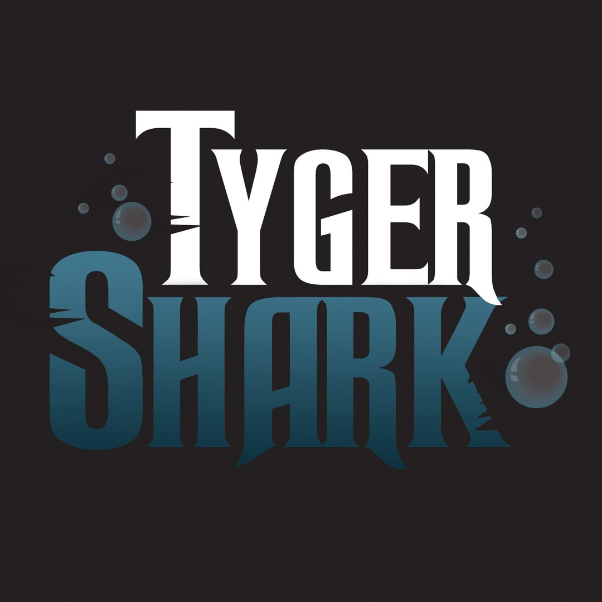
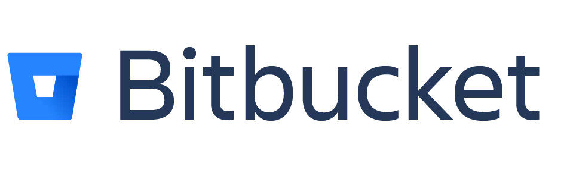
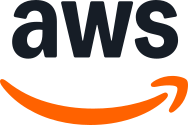
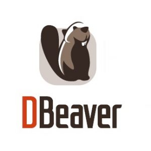
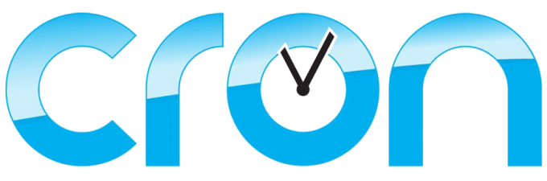
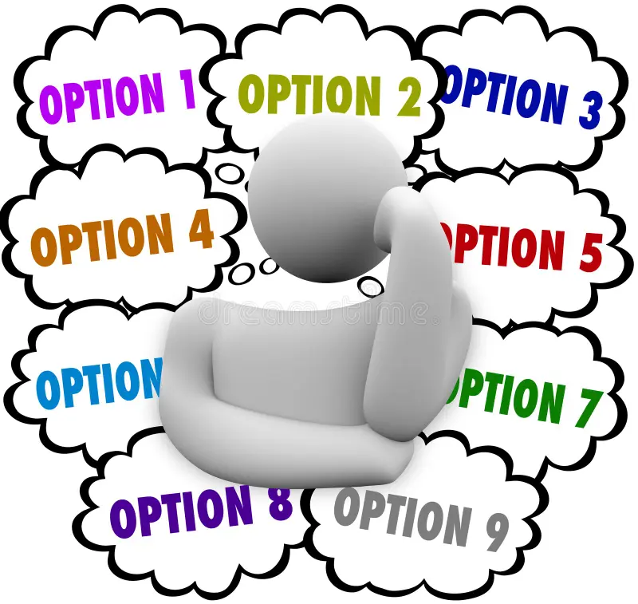

Work Term 4


TygerShark Inc
Tyger Shark Inc is a small startup tech company that primarily works in the software development industry. While still managing their video platform VidVisor as well as partnerships mentioned last term, they began a new consulting agreement with Sports Illustrated Tickets.As mentioned, while I was away the engineering team at Tyger Shark undertook a large agreement with Sports Illustrated Tickets - An up-and-coming competitor to Ticketmaster under the parent company of Sports Illustrated. SI Tickets only began development a few years ago, and there was recently a large push to develop bigger and better functionality in a swift amount of time. This is where TygerShark jumped in to help. SI Tickets took us in as contract developers to effectively work as full-time developers as part of their organization.
| Lead VidVisor Developer |
|---|
|
The other developers at Tyger Shark shifted over to SI Tickets shortly after I left my last co-op term. For the first
couple months of this term, before they were ready to integrate me into their SI Tickets work, I became the sole
developer behind the video distribution tool, VidVisor. This was the platform I helped work on for the entire duration
of my last term, so right on my first day I dove into work that the other developers weren't able to prioritize. This
included various bugs, both frontend and backend, as well as new features and improvements that came from client
feedback. Because of my prior experience with the platform, I felt very capable and confident in my work right from the
get-go. It felt good that the skills that I learned remained intact after a break from the company and their tech stack.
 Additionally, after I was moved to join the SI Tickets team, I still remained the lead VidVisor developer and point of contact for our product lead. Admittedly it was was difficult to divide my attention between the two projects, but I am proud that I was dependible enough to handle both projects simultaneously. My workload on the VidVisor side definitely did decrease after joining SI Tickets. The priority shifted for me to focus on key bugs and frustrations that users of the platform brought up. New feature development was at a standstill, as most of my time was diverted to working on SI Tickets. |
| SI Tickets Marketplace Work |
|
About halfway through my term, I was brought on to join the SI Tickets team! This was a pretty different experience to
what I was used to. The way they operate was fairly similar to what we did at Tyger Shark, but on a much bigger scale.
Rather than there being only 3 employees to handle the entire tech stack, SI Tickets had multiple different development
teams that specialized in different areas of the system. When I joined, I was integrated into the main frontend team, called the Marketplace team,
handling all user-facing bugs and features. Luckily, their tech stack was very similar to what I'm most comfortable
with; React+TS frontend with Node.ts backend.
 housed in one repository like VidVisor was. That's because all backend functionality was handled using a microservice approach, allocating various responsibilities to a number of different AWS Lambda functions, each with its own distinct repository. What's more, the repositories were housed on Atlassian's BitBucket rather than GitHub. This made for more straightforward compatibility with their main ticketing platform, Jira.My primary flow as a developer on this team was to receive a ticket and push my code once it was completed. Many times when investigating bugs I would look into the AWS Cloudwatch logs for our Lambda functions. Any code that is approved then proceeds through two stages of quality assurance before being greenlit for production. First there is QA, and then UAT (User Acceptance Testing), each with their own separate environment and domain. This gave me some peace of mind that code I wrote while still learning the system did not immediately get published to production. I began with smaller tasks and bug fixes, but by the end of my time on this team about 2 more months later, I was making significant contributions to the platform. For instance, I created a new user Terms & Conditions page that's used when users are listing tickets they bought to be resold. In addition to the page itself, I created a new api endpoint that wrote the user's acceptance to a new table in the platform database. This was a whole end-to-end flow that I made myself. Another major addition I made had to do with an AWS feature that our frontend used, called AWS AppConfig. With this, anyone with access could flip Feature Flags on  and off, enabling and disabling certain functionality that the developer locks behind the flag. This is leveraged primarily by QA testers to test each piece of code in isolation. One caveat was that our frontend repository was the only one built with the capabiltiy to read these feature flags. It ended up becoming my job to create this functionality for our Lambda functions within a repository that acted as a library for all our Lambdas. I ended up making an entire Feature Flag retrieval and caching service that has gone on to be used in several of our Lambdas as feature flags became more commonly used. |
| SI Tickets Data Team Work |
|
 A couple weeks before the end of this term, I was transferred to a different team at SI Tickets: The data engineering team. I was switched here because of my past experience in data as well as my strong attention-to-detail. The data team works on taking the current company data and transforming it to better suit the company's needs for reporting and general ease-of-use. This is mostly managed through a series of ETL (Extract, Transform, Load) scripts that retrieve and combine data from various internal sources. So far my main tasks have included taking values from existing tables that come in the form of JSON arrays, and creating new views that expand these JSON values into rows to make the JSON data viewable in things like reports. I also learned about a strong data-visualization tool called DBeaver. DBeaver is has become a tool I use daily to investigate and test and data changes I make.Our main reporting software is Tableau. The way our reporting currently operates is that Tableau is synced with out data via a scheduled Cron job. This job triggers a series of api calls for Tableau to create its own jobs to sync its data with ours. This brings me to my largest task I've had on this tem so far, which was creating my own Cron job that checks if any of Tableau's jobs have gotten "stuck" and are no longer progressing with the  data sync. The scheduled script that I created makes api calls to Tableau to grab all the currently executing jobs and check how long they've been running for. If it exceeded a certain time value, my script makes a series of calls to terminate the existing job and create a fresh job to sync the same data. This helps to fee up the job queue in the event that any jobs get stuck and end up clogging the rest of them from being able to run. |
| Goal #1 - Communication |
|---|
|
My first goal was: |
| Goal #2 - Critical & Creative Thinking |
|
This next goal has to do with a large part of software development beyond just technical knowledge:  came down to me alone. And I'm proud to say that even though in the slightly more lax and independent environment, I was able to hold myself to a high standard of code quality despite some of the code I was working around. Fairly often I found myself feeling tempted by an easy but unsustainable solution to a problem, but remained firm on my desire to produce code I can be proud of and confident in. There were multiple occasions where I would be working on my ticket and just come across a chunk of code that I see duplicated in multiple places, and even though it was completely unnecessary for the completion of my ticket, I took it upon myself to create reusable util functions for the duplicated code. |
| Goal #3 - Backend Literacy |
|
My third goal hones-in on what I believe to be my least-confident area in general software development ability: |
|
Overall this term has been a great experience that has helped evolved my knoweledge of how software development operates at a larger scale. I have continued to build my confidence in tools I'm familiar with, and also had the opportunity to deepen my familiarity with AWS and many of its capabilities! Not only that, but I also continue to build my confidence as a development team member, learning to speak up and share my opinions and findings more regularily. I'm very happy that, thanks to the new partnership with SI Tickets, this term became a much different experience compared to my last work term at Tyger Shark. Even though I am working at the same company, I am glad to still be getting lots of new valuble experiences. |
 an api retry handler that I made to re-synchronize a user's session in the event of a 401 error, creating a service for
AWS Lambda functions to be able to retrieve configured AWS Feature Flags, and setting up a scheduled job using Cron to
detect, cancel, and retry jobs that were queued or running for too long. Although these are smaller in scope, they still
taught me a lot about what goes into the inner workings of these pieces of infrastructure that you typically don't see
as often. I'm very grateful to be trusted and given the opportunity to implement core elements like these despite not
being a full-time employee. I intend to carry this goal forward into my next term to see how much more confidence in
backend-related architecture I can gain.
an api retry handler that I made to re-synchronize a user's session in the event of a 401 error, creating a service for
AWS Lambda functions to be able to retrieve configured AWS Feature Flags, and setting up a scheduled job using Cron to
detect, cancel, and retry jobs that were queued or running for too long. Although these are smaller in scope, they still
taught me a lot about what goes into the inner workings of these pieces of infrastructure that you typically don't see
as often. I'm very grateful to be trusted and given the opportunity to implement core elements like these despite not
being a full-time employee. I intend to carry this goal forward into my next term to see how much more confidence in
backend-related architecture I can gain.